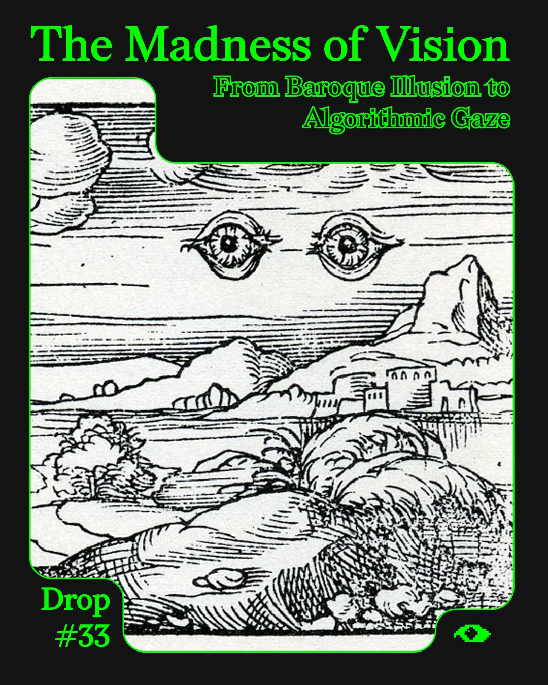
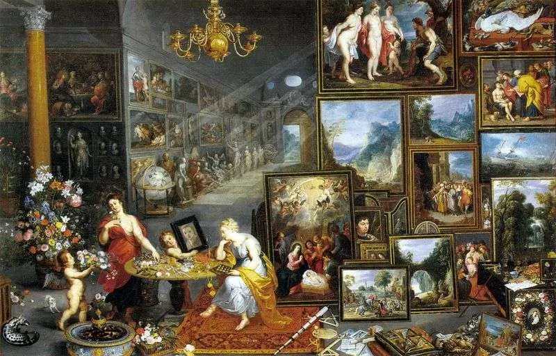
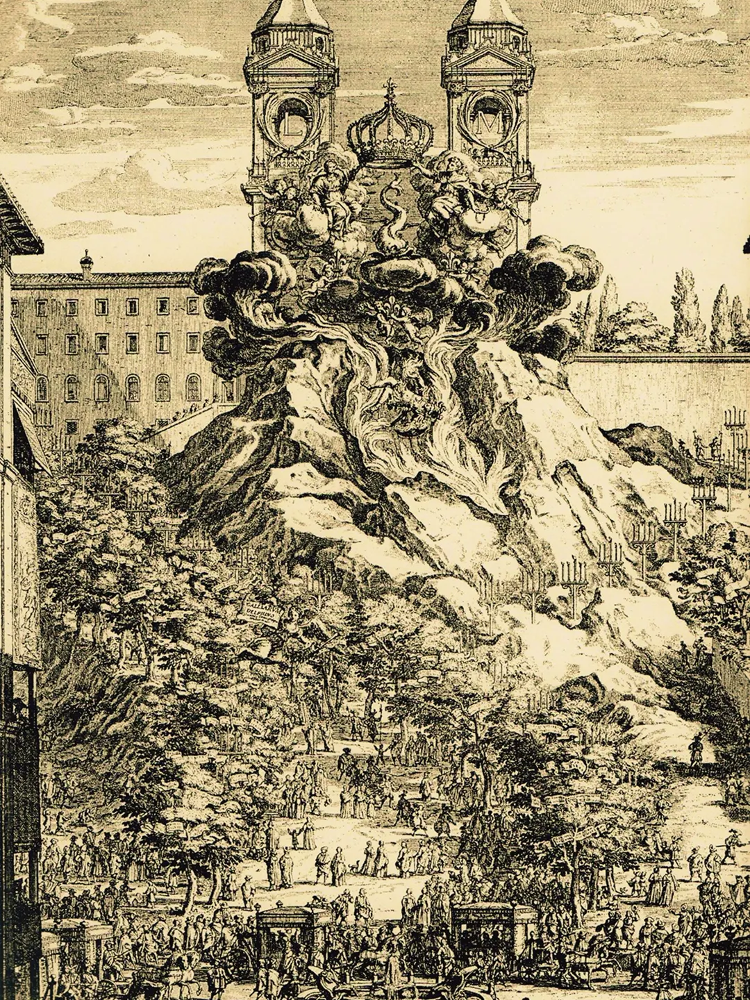
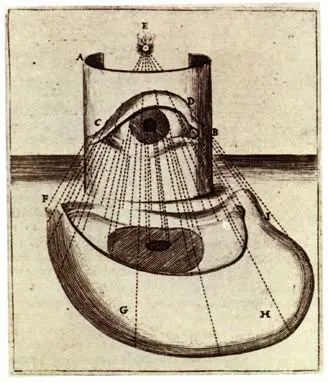
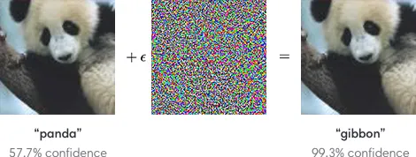
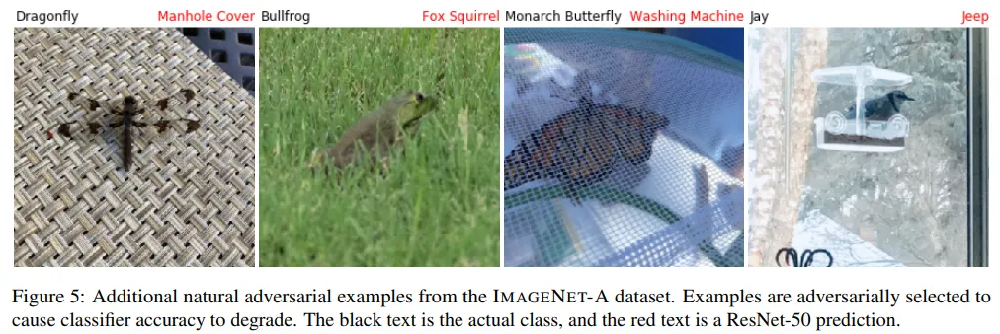
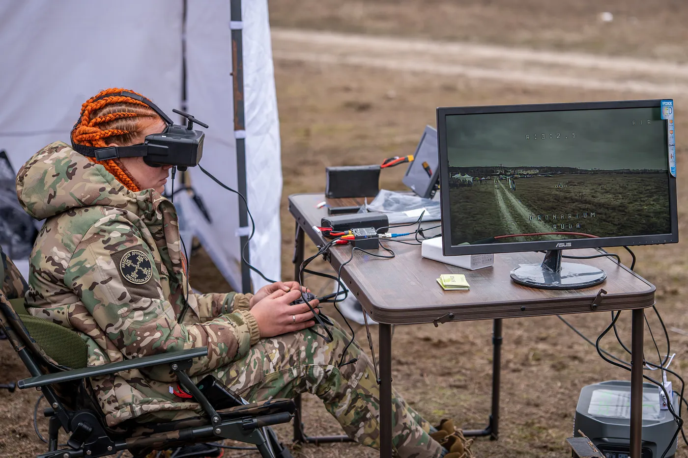

Drop #33 · May 7, 2025 · 13 min read
Hey everyone (▰˘◡˘▰)
Welcome back to DROPS, REINCANTAMENTO's newsletter.
Drop #33 brings you a translated piece: The Madness of Vision" (originally "La follia del vedere"), firstly published in Italian on Not (Nero Editions) in March 2021.
I’ve decided to revisit this essay, originally written at the beginning of the AI image generation boom, because I somehow felt it contained some fertile intutitions to understand the current rise of AI aesthetics and ethics. , namely the focus on optical metaphors and the baroque character of digitality
This essay forms the basis for my upcoming talk at the MAST Festival on Monday, August 4th, set in the baroque splendor of Scicli, Sicily.
The baroque 'folly of seeing' that I described now manifests in drone warfare in Ukraine and Gaza, where the omniscient gaze of military technology continues to embody the deadly paradox of seeing-as-power. Meanwhile, what we now call 'AI slop' - from the embarrassing hallucinations in Trump's presidential communications to the surreal visual logic of Italian Brain Rot memes - demonstrates how our machine vision systems remain fundamentally baroque in their tendency toward illusion, distortion, and excess

Everything I see is in principle within my reach (or at least within the reach of my gaze), inscribed in the map of my "I can."
— Maurice Merleau-Ponty
Now objects look at me— Paul Klee
Walter Benjamin stated in the Arcades Project : "Each epoch, in reality, already dreams of the next one, but in dreaming it urges, with a strategy similar to the Hegelian cunning of reason, toward its own awakening." The dreams of the Baroque era—a distant and forgotten historical period that Benjamin investigated—can tell us something about the digital dreams of our present.
The Baroque is a strange, almost grotesque cultural epoch, characterized by systemic chaos and various artistic attempts to navigate this disorder. The word baroque has two probable roots. On one hand, the French baroque (modeled after the Portuguese barroco and Spanish barrueco) indicated pearls with irregular shapes, not spherical but ovoid, curved, or lumpy. Charles de Brosses, Count of Tournay, used the term to describe some oddities in the architecture of Palazzo Pamphilj in Rome.From the beginning, therefore, there was a sense of strangeness—a shifting of classical criteria expressed in form, not substance.
The second etymological root is even more interesting. In Italian, baroque seems to derive from baròco, a mnemonic term from scholastic syllogistics used to remember the mode of the second figure of the syllogism:
In this syllogism, the major premise (indicated by the A in "ba") is universal affirmative, while both the minor premise (indicated by the O in "ro") and the conclusion (indicated by the O in "co") are particular negatives.This reasoning, while technically valid, is nevertheless convoluted and unnecessarily complex. For example:
All men are rational —> some animals are not rational —> some animals are not men.
The baròco argument represents an evanescent display of pure rhetoric—a convoluted linguistic exercise that elevates empty points into structural principles. In both roots, the word baroque has a derisive and caricatural value, if not outright derogatory. The Baroque era was not experienced by its contemporaries. No man or woman of the seventeenth century ever defined themselves as baroque. The baroque category emerged later and, in eighteenth-century eyes, carried derogatory connotations: a dark and reactionary age in which art and customs degenerated into eccentric oddities. It was seen as an interlude of bad taste between the triumph of the Renaissance and Enlightenment rationalism: a grotesque interregno.
Baroque art, literature, and music stepped outside Renaissance classicist criteria and, paradoxically, in seeking religious purity, came into contact with extreme worldliness.
Christine Buci-Glucksmann identifies sight as the central and constant pivot of baroque chaos through the arts. Buci-Glucksmann's work, published in the 1980s, engages with postmodern philosophies and with the concept of simulation, particularly regarding Jean Baudrillard's work. However, Buci-Glucksmann's conception of the Baroque transcends postmodern themes and engages with our present and future.
The eye is 'the central organ of the baroque system,' and its representation recurs in various Allegories of Sight, painted by anonymous artists and well-known painters such as Miguel March and Ribera.
The most vertiginous painting of this genre is the Allegory by Jan Brueghel the Elder and Rubens. In this recursive scene, the painting represents many other paintings, which are in turn reflected in mirrors in the background. On the floor, one notices a telescope, a marvel of optics invented in the seventeenth century and a key instrument of the scientific revolution of Kepler and Galileo.
The baroque 'madness of seeing' both fueled and was fueled by the emerging scientific enterprise. The human gaze turned, through new lenses, to the wonders of the cosmos and discovered the regularities of the universe.
In his monumental work Criticón, Jesuit writer and philosopher Baltasar Gracián extolled the multiplicity of the visible and defined sight as "the noblest of the senses." "If I had a hundred eyes and a hundred hands to satisfy the curiosity of my soul, I would still not be able to do so," lamented the protagonist Andrenio. The universe is a phantasmagoria, a theater of the imaginary that displays its wonders for human admiration. As Gracián wrote in the Criticón: "the great theater of the universe with its balcony of vision and life."

Gianlorenzo Bernini, one of the greatest baroque artists, created "ephemeral apparatuses" in his workshop for festivals and public celebrations: this lesser-known activity exemplified baroque aesthetics, suspended between magnificence and ephemerality. The ephemeral apparatuses were architectural structures made of wood and papier-mâché, extensively decorated and enhanced with sound effects.
A famous apparatus from 1651, built for the birth of the Dauphin of France, consisted of royal initials, a gigantic dolphin, and a cloud that covered Trinità dei Monti and created a pyrotechnic spectacle before self-destructing. Bernini constructed an ephemeral theater inside St. Peter's Basilica for the canonization of Elizabeth of Portugal. These installations, created by one of the era's greatest artists, demonstrate a pursuit of immersive theatricality that incorporates the viewer's perspective within the artwork, as well as a taste for wonder and astonishment.
On one hand, Galileo's telescope; on the other, Bernini's ephemeral machines. The baroque eye sees incredible things and reaches previously unknown truths, yet also dwells in the beauty of deception—in the haziness of decoration that appears and disappears in a day. Never before the Baroque had there been such awareness of the ambiguity of the gaze, of the illusion that could confuse human sight and lead it to deception.

The Baroque was above all the age of anamorphism and trompe-l'oeil, as optical illusions became a widespread fashion throughout Europe. Anamorphosis is a type of pictorial representation created with perspective deformation that allows correct viewing from only a single viewpoint, appearing distorted from all other angles. Mario Bettini's Cardinal Colonna's Eye exemplifies this anamorphism and further embodies baroque visual ambiguity. The work presents both a precise, almost scientific representation of an eye and a distorted, anamorphic image of a second eye.
Trompe-l'oeil represents the typical model of baroque illusion. Literally meaning "deceives-the-eye," this technique creates works that blur the boundary between architecture and painting through optical illusion. False domes, colonnades that seem dozens of meters long, three-dimensional canvases: trompe-l'oeil art revels in deception and seeks the wonder that only the opacity of truth can provide.
Cardinal Pallavicino, an admirer of Bernini, expressed this sentiment in a 1645 letter: "and generally every professor of imitative art is all the more praiseworthy, the more he deceives." What makes baroque ambiguity more radical than traditional binary thinking is the absence of negative judgment regarding falsehood. The illusory gaze and the rigorous gaze, trompe-l'oeil and the Galilean telescope, coexist in the same vision. Buci-Glucksmann aptly defines this as a "madness of seeing": a gaze that seeks to embrace all of existence and transcend its contradictions. The oxymoronic nature of baroque seeing does not oppose science to illusion because science itself creates its own opposite. Scientific truths and discoveries make the spectacle of illusions possible.

The Omniscient Machine and Algorithmic Hubris
Omniscience, the totalitarian ambition of the European West, can appear here as the formation of a complete image through the removal of the invisible— Paul Virilio
The visual dreams of the Baroque remain alive in the ambitions of so-called Artificial Intelligence. A genuine "madness of seeing" continues to fuel technical development in various fields, from automated warfare to image recognition.
To better understand how machine learning algorithms and statistical techniques impact society, we should consider them as optical instruments—lenses that allow us to perceive the world in particular ways. This idea takes shape in The Nooscope Manifested, Matteo Pasquinelli and Vladan Joler's crucial text on AI history. The authors describe machine learning algorithms as tools of knowledge magnification that help perceive features, patterns, and correlations across vast data spaces beyond human reach. These devices function as extensions of human rationality—tools that augment our cognitive and visual capacities, much as microscopes and telescopes revolutionized biology and astronomy.
In Nooscope, Pasquinelli and Joler cite Leibniz, the quintessential baroque philosopher, who wrote about the formalization of knowledge. For Leibniz, effective formalization was the key to enhancing human rationality. He believed formalization would do for the mind what optical instruments had done for sight. As a techno-enthusiast ahead of his time, Leibniz saw in formalized knowledge "the light that seeps through the darkness as through a crack."
Caught up in the fervor of his era, Leibniz did not consider the shadow side, the chiaroscuro, of these techniques.
On March 18, 2018, this algorithmic hubris revealed its tragic consequences. When an Uber self-driving SUV encountered Elaine Herzberg on her bicycle, the vehicle's statistically trained vision system failed to recognize both the bicycle and the pedestrian, ultimately striking and killing her. The algorithmic gaze, apparently correct, transparent, and objective, revealed what Baroque artists already knew: every enhanced vision brings new forms of hallucination.
The algorithms involved in Elaine Herzberg's death were trained on gigantic datasets containing millions of images, a visual abundance beyond human processing capacity that only computational power can manage. These datasets, particularly the massive and controversial ImageNet, enabled what researchers called "machinic vision." What began as a summer project at MIT in 1966 required more than fifty years to achieve acceptable results. Like the anamorphic distortions of baroque art, refined machinic vision generates new forms of visual and statistical hallucination. Our databases contain embedded biases, and algorithmic labels inherit these problematic patterns. Most importantly, these machines have not achieved true understanding, and they remain surprisingly easy to deceive.
Machine learning systems suffer from their own form of optical illusion, technically called adversarial examples. These are inputs deliberately designed to fool machine learning systems. When machines process images, they analyze pixel patterns through mathematical calculations. Subtle pixel modifications—invisible to humans but precisely targeted—can cause these systems to fail dramatically.

What might appear as mere classification errors can have tragic real-world consequences. As researchers at Logic Magazine observed:
"In the moments before the car hit Elaine, its AI software cycled through several potential classifications for her—including 'bicycle,' 'vehicle,' and 'other'—but ultimately failed to recognize her as a pedestrian on a collision course with the vehicle."
Beyond accidental misclassification, adversarial examples can be deliberately crafted to exploit machine learning vulnerabilities. Companies and researchers work to address these blind spots by training systems on adversarial examples, hoping to prepare them for such visual distortions. More troubling is when these errors occur in real-world environments that remain inherently complex, ambiguous, and difficult to interpret.

These systems can mistake a monarch butterfly for a washing machine or confuse a small bird with a jeep: embarrassing failures that reveal fundamental limitations in machine reasoning. This fragility and intrinsic fallibility raises critical questions about appropriate applications for these technologies.
Consider automated warfare and drone deployment in the War on Terror, where death becomes the intended outcome rather than an accidental byproduct of machine error. Machine vision becomes a refined weapon, the baroque madness of seeing pushed to its logical extreme: being seen equals being killed.
Gregoire Chamayou has critically examined drone warfare in A Theory of the Drone. In chapter 4, Chamayou quotes American Colonel Theodore Osowski, whose words echo baroque omniscient ambitions: "It's like being under God's gaze. And the light descends in the form of a Hellfire." The human gaze, called the "noblest of the senses" since the Baroque era, has long aspired to achieve God's omniscient perspective. This ambition appears realized in drone technology, which enables 24-hour surveillance of targets, pattern recognition through machine learning, and ultimately remote elimination without physical proximity to violence.
Pakistani men endure uninterrupted surveillance by the US military. Operating from the Arizona desert thousands of miles away, this system never closes its eyes, rotating operators every eight hours.
"See everything, all the time. This extension of the field of vision will likely be entrusted to new and revolutionary optical devices still in development. Equipped with such synoptic imaging systems, a drone would have at its disposal not one but dozens of high-resolution micro-cameras pointed in every direction, like the multiple facets of a fly's eye. A software system would aggregate the various images in real-time into a single overview that could be viewed in detail when necessary.”
The sequence is stark: see, analyze, surveil, kill. God's gaze becomes God's judgment, a lethal signal that travels around the world to determine human fate. This scenario retains the baroque gaze's essential characteristic: the tragic awareness that no vision is perfect. Every enhanced gaze creates new errors and blind spots, making true omniscience impossible.
Drones, supposedly the most precise weapons ever invented and the realization of humanity's most ambitious dreams, have killed 2,000 civilians and nearly 500 children since the War on Terror began.
Far from being objective, drone vision systems depend on statistical interpretations and operator decisions that introduce subjective elements into their target assessments. These "numerical experiences," as philosopher Paul Virilio termed them, create patterns of algorithmic hallucination and distorted reasoning that produce tragic errors.
One military drone operator described his work: "You see them wake up in the morning, do their work, go to sleep at night. I see mothers with children, I see fathers with children, I see fathers with mothers, I see children playing soccer." Our future depends on how we regulate this automated vision technology, determining appropriate applications and establishing clear ethical boundaries. The Uber incident and Middle Eastern drone operations demonstrate that we already deploy these technologies in life-threatening applications. We deceive ourselves by imagining these dystopian applications belong to some distant future rather than our present reality.
We must recognize the baroque nature of our machine vision systems. Cardinal Pallavicino's lesson remains relevant for algorithmic perception: "all the more praiseworthy, the more it deceives." Only by acknowledging this fundamental deception can we develop more critical approaches to machine vision and its applications.

An army operator has stated about his work: "You see them wake up in the morning, do their work, go to sleep at night. [...] I see mothers with children, I see fathers with children; I see fathers with mothers; I see children playing soccer." Our future will depend on how we resist this automated madness of seeing, in which areas it will be applied and with what purposes. As the Uber incident and drones in the Middle East demonstrate, we already have sensitive and risky uses for human life. The greatest illusion is to think we are far from certain dystopian scenarios, to relegate them to a distant future.
We need to wake up as soon as possible from the baroque dream of our machines. We will have to repeat to ourselves Cardinal Colonna's lesson, also valid for the algorithmic gaze: "all the more praiseworthy, the more it deceives." Only with this awareness might we perhaps awaken from the long baroque dream in which we have ended up.